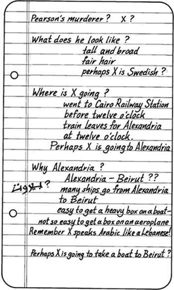

3
Listen to Part 1:

Tài xế taxi
Ahmed và Salahadin rời phòng Pearson và xuống cầu thang. Họ ngồi xuống và người quản lý mang đến cho họ chút cà phê.
‘Làm sao chúng ta có thể tìm được chiếc hộp thứ bảy?’ Ahmed hỏi.
‘Tôi cần anh giúp,’ Salahadin trả lời.
‘Làm sao tôi có thể giúp anh được?’ Ahmed hỏi.
‘Kẻ giết người đã cầm theo chiếc hộp,’ Salahadin nói. ‘Nó rất nặng và hôm nay trời rất nóng. Kẻ giết người không thể mang theo chiếc hộp đi xa lắm. Có lẽ hắn đã đi taxi.’
‘Có lẽ hắn có ô tô riêng,’ Ahmed nói.
‘Chúng ta không biết,’ Salahadin trả lời. ‘Nhưng có lẽ hắn đã đi taxi.’
‘Cũng có thể,’ Ahmed đồng ý. ‘Và anh muốn tìm chiếc taxi đó. Nhưng làm sao tôi có thể giúp anh được?’
‘Anh có thể phát tin nhắn của cảnh sát trên Đài Cairo,’ Salahadin trả lời.
Listen to Part 2:
‘Đúng vậy,’ Ahmed đồng ý. ‘Tôi sẽ nói gì trong tin nhắn?’
‘Pearson mất lúc nào?’ Salahadin hỏi.
‘Khoảng hơn mười giờ sáng nay,’ Ahmed trả lời.
‘Vậy thì đây là tin nhắn,’ Salahadin nói. ‘Cảnh sát muốn trao đổi với tài xế taxi. Tài xế taxi này có mặt gần Khách sạn Nile vào khoảng mười một giờ sáng nay. Một người đàn ông đã lên xe của anh ta. Người đàn ông này mang theo một chiếc hộp rất nặng. Cảnh sát muốn trao đổi với tài xế taxi sớm nhất có thể.’
‘Tốt,’ Ahmed nói. ‘Tôi sẽ phát tin nhắn này ngay lập tức.’
‘Hầu hết các xe taxi đều có radio,’ Salahadin nói. ‘Có lẽ một tài xế taxi sẽ nhớ ra một người đàn ông mang theo một chiếc hộp rất nặng.
‘Tôi sẽ quay lại văn phòng,’ Salahadin nói tiếp. ‘Khi có gì xảy ra, hãy cho tôi biết.’
‘Tôi sẽ điện thoại ngay cho anh,’ Ahmed trả lời.

Giờ đã là chiều muộn. Ngoài đường vẫn rất nóng. Salahadin lên một chiếc taxi. May mắn là có rất ít ô tô và đường phố gần như vắng tanh. Ông sớm trở về văn phòng làm việc của mình.
Listen to Part 3:
Salahadin bật radio. Ông nghe thấy tin nhắn. Tin nhắn được phát lại sau mười lăm phút. Salahadin chờ đợi. Đột nhiên, điện thoại reo. Đó là Ahmed.
‘Chúng ta may mắn rồi,’ Ahmed nói. ‘Có một tài xế taxi đến văn phòng tôi. Một người đàn ông mang theo một chiếc hộp rất nặng đã lên xe của anh ta gần Khách sạn Nile.’
‘Lúc mấy giờ?’ Salahadin hỏi.
‘Mười một giờ sáng nay,’ Ahmed trả lời. ‘Anh có muốn nói chuyện với anh ta không?’
‘Tất nhiên rồi,’ Salahadin trả lời. ‘Tôi sẽ đến văn phòng anh ngay lập tức.’
Văn phòng của Ahmed khá gần. Salahadin đi bộ đến đó. Mặt trời đã lặn và trời mát hơn.
Tài xế taxi đang đợi trong văn phòng Ahmed. Anh ta mập, trông rất vui vẻ. Anh ta cũng rất thông minh. Salahadin lấy cuốn sổ tay ra và hỏi tài xế taxi một số câu hỏi.
‘Người đàn ông này lên xe anh lúc mấy giờ?’ Salahadin hỏi.
‘Vài phút trước mười một giờ,’ tài xế taxi trả lời. ‘Anh ta lên xe rất gần Khách sạn Nile.’
‘Anh ta có mang theo gì không?’ Salahadin hỏi.
Listen to Part 4:
‘Có,’ tài xế taxi trả lời, ‘một chiếc hộp rất nặng.’
‘Và anh ta trông thế nào?’ Salahadin hỏi.
‘Anh ta cao, vai rộng,’ tài xế taxi trả lời. ‘Anh ta tóc vàng. Anh ta nói tiếng Ả Rập, nhưng anh ta không phải người Ả Rập. Có lẽ anh ta là người Thụy Điển.’
Salahadin suy nghĩ trong chốc lát. Sau đó, ông hỏi tài xế taxi một câu hỏi khác.
‘Người đàn ông này nói tiếng Ả Rập đúng không?’ Salahadin hỏi. ‘Anh ta nói tiếng Ả Rập như thế nào?’
‘Ông có ý gì?’ tài xế hỏi.
‘Anh ta nói tiếng Ả Rập như người Ai Cập không?’ Salahadin hỏi.
‘Ồ, không,’ tài xế taxi nói. ‘Anh ta nói giống như người Lebanon.’
‘Anh đã đưa người đàn ông này đến đâu?’ Salahadin hỏi, tiếp tục đặt câu hỏi.
Listen to Part 5:
‘Tôi đã đưa anh ta đến ga tàu,’ tài xế trả lời. ‘Anh ta muốn đến đó trước mười hai giờ.’
‘Mười hai giờ trưa,’ Salahadin nói khẽ. ‘Có chuyến tàu nào rời Cairo lúc mười hai giờ?’
‘Chuyến tàu tốc hành đến Alexandria,’ tài xế taxi trả lời ngay lập tức. ‘Tôi biết tất cả các chuyến tàu. Chuyến tàu tốc hành rời Cairo lúc mười hai giờ và đến Alexandria lúc hai giờ rưỡi.’
Salahadin đã may mắn. Ông đã tìm ra một số sự thật quan trọng. Ông nhìn vào những ghi chú trong cuốn sổ tay.

Mục lục
- Bìa
- Trang tiêu đề
- Trang bản quyền
- Mục lục
- Ghi chú giới thiệu
- 1 Salahadin lo lắng
- 2 Chiếc hộp mất tích
- 3 Tài xế taxi
- 4 Thuyền đến Beirut
- 5 Con mèo đen
- 6 Ở Beirut
- 7 Đường đến Ba’albek
- 8 Câu chuyện của Borkman
- 9 Beirut đến Athens
- 10 Salahadin tìm thấy Peterson
- 11 Salahadin tìm thấy con mèo đen
- 12 Cái chết trên The Syria
- 13 Không làm phiền
- 14 Trở về Cairo
- 15 Kết thúc
- Điểm cần hiểu